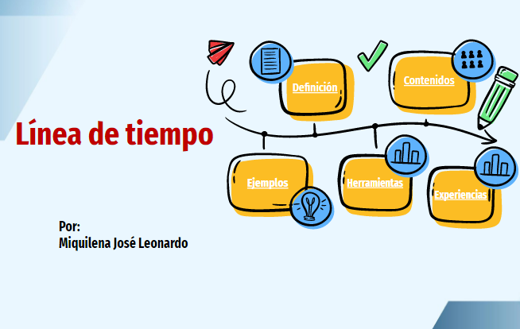
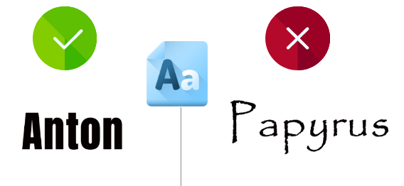
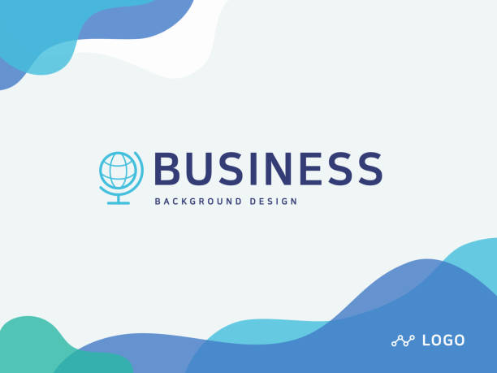

¿Que es una presentación en línea?
¿Que es una presentación en línea?
Una presentación en línea es una presentación de diapositivas que se puede crear, editar y compartir utilizando herramientas en línea. Estas presentaciones se realizan mediante plataformas que ofrecen servicios para la creación y edición de contenido multimedia, y se pueden visualizar utilizando cualquier dispositivo con acceso a internet. Una de las ventajas de las presentaciones en línea es que permiten la colaboración en tiempo real entre distintos usuarios, lo que facilita el trabajo en equipo y la realización de presentaciones conjuntas.
Las ventajas de las presentaciones en línea incluyen:
- Flexibilidad en el diseño.
- Uso de recursos multimedia para enriquecer las presentaciones.
- Se pueden proyectar frente a audiencias numerosas .
- Permite publicar temas propios de interés.
- Fácil acceso y edición en cualquier lugar y momento.
¿Qué elementos contiene una presentación en línea?
A continuación ofrecemos varios recursos que nos permitirán profundizar un poco más en las características de los REA.
Diapositivas
Las diapositivas en una presentación en línea son las diferentes secciones de contenido que se muestran consecutivamente en la pantalla a medida que el presentador va avanzando en la presentación. Estas diapositivas pueden contener imágenes, texto, gráficos y otros elementos multimedia que se combinan para ayudar a transmitir el mensaje y la información de la presentación de manera clara y efectiva.

Figura. Ejemplo de diapositiva
Contenido
El contenido en una presentación en línea es la información que se muestra en las diapositivas de la presentación, incluyendo el texto, imágenes, gráficos, videos y otros elementos multimedia que se utilizan para transmitir el mensaje o tema de la presentación. Un buen contenido debe ser claro, conciso y relevante para la audiencia, y debe ser presentado de una manera atractiva y fácil de entender para mantener la atención y el interés del público.

Fuente o tipografía
Las tipografías o fuentes en una presentación en línea son los diferentes estilos de letra que se pueden utilizar para mostrar el contenido de la presentación, como títulos, subtítulos, texto regular, entre otros, con el fin de hacer la presentación más legible y atractiva visualmente. Una elección correcta y combinación de tipografías puede mejorar la calidad de la presentación y asegurar una mejor comprensión del mensaje

Fondo
El fondo en una presentación en línea es la imagen o el color de la parte posterior de cada diapositiva en la presentación. Es decir, es el área en la que se muestran los elementos de la diapositiva, como el texto, las imágenes, los gráficos y otros elementos multimedia. El fondo puede ser personalizado para incluir imágenes o diseños que complementen el mensaje o tema de la presentación.

Obra publicada con Licencia Creative Commons Reconocimiento Compartir igual 4.0